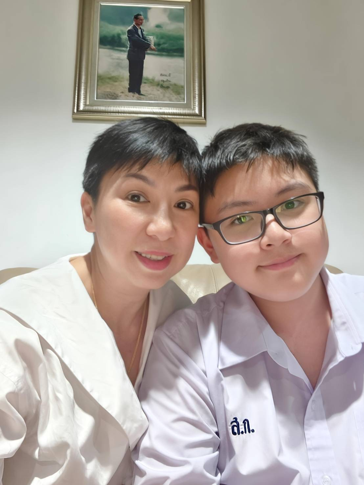
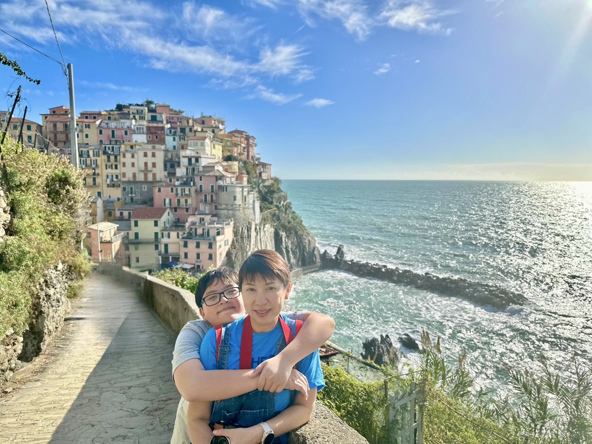
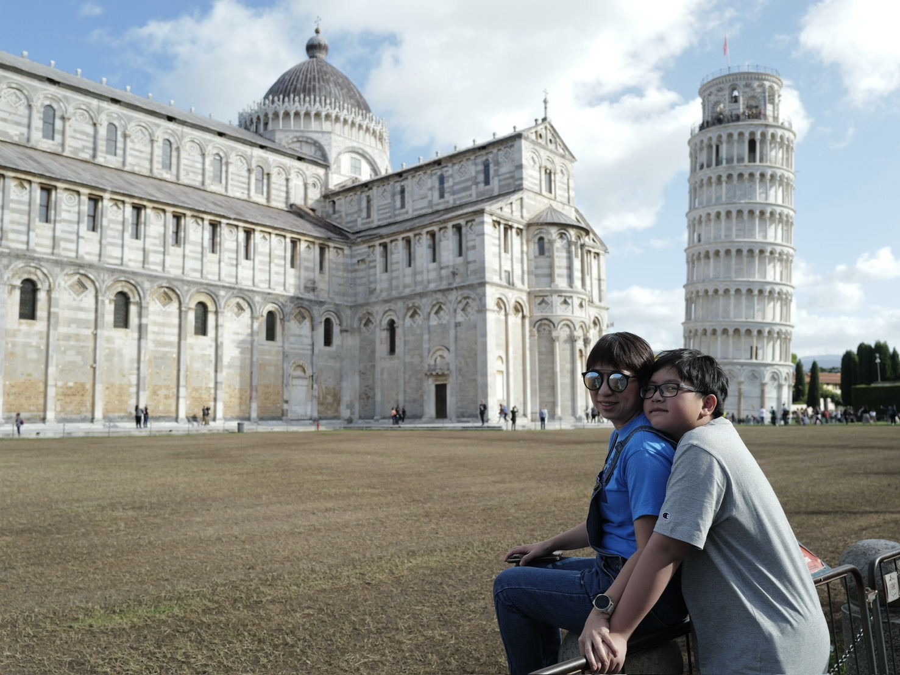
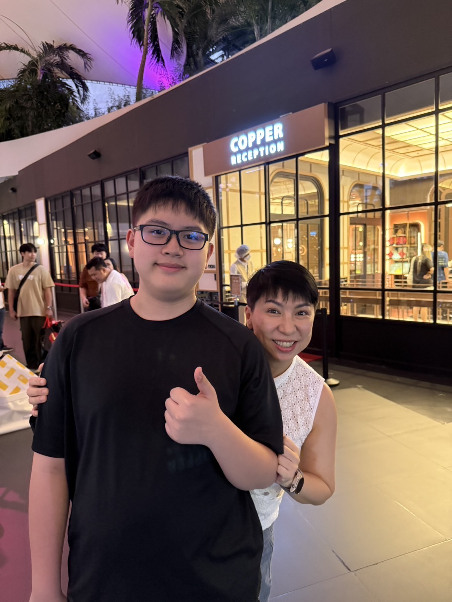
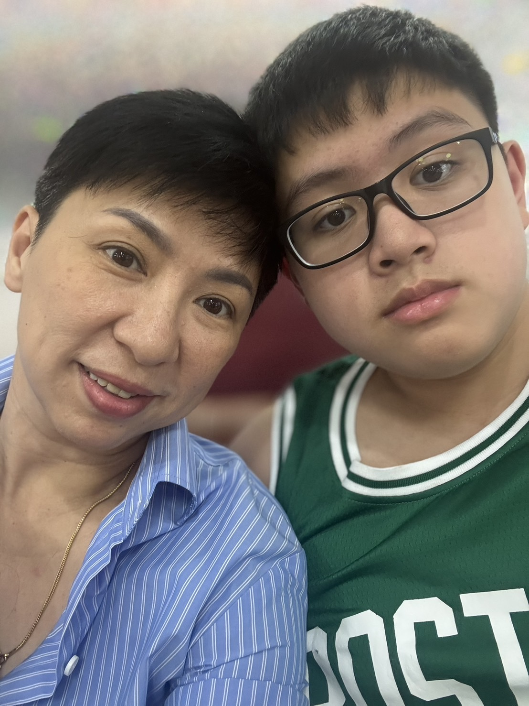
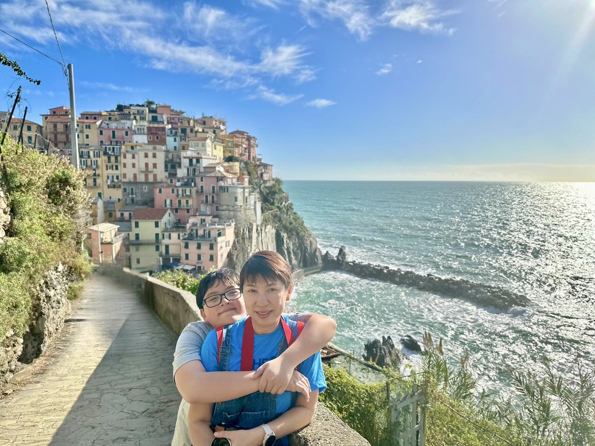
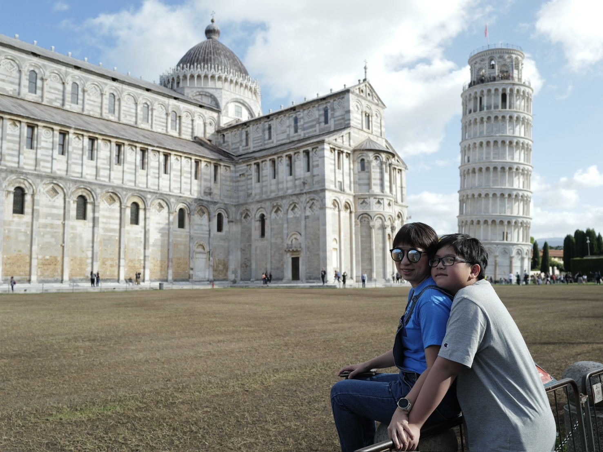

วันแม่แห่งชาติ👩
สิ่งที่อยากจะบอกแม่
ขอให้แม่มีเงินมีทองร่ำรวยนะครับ
  
บทกลอนมอบให้แม่
รักของแม่ตราตรึงใจประทับใจมอบชีวิตเลี้ยงลูกรักจนเติบใหญ่
ขอสัญญาว่าเมื่อลูกนี้โตไป
เป็นผู้ใหญ่เป็นคนดีของสังคม
ขอให้แม่มีเงินมีทองร่ำรวยนะครับ
 